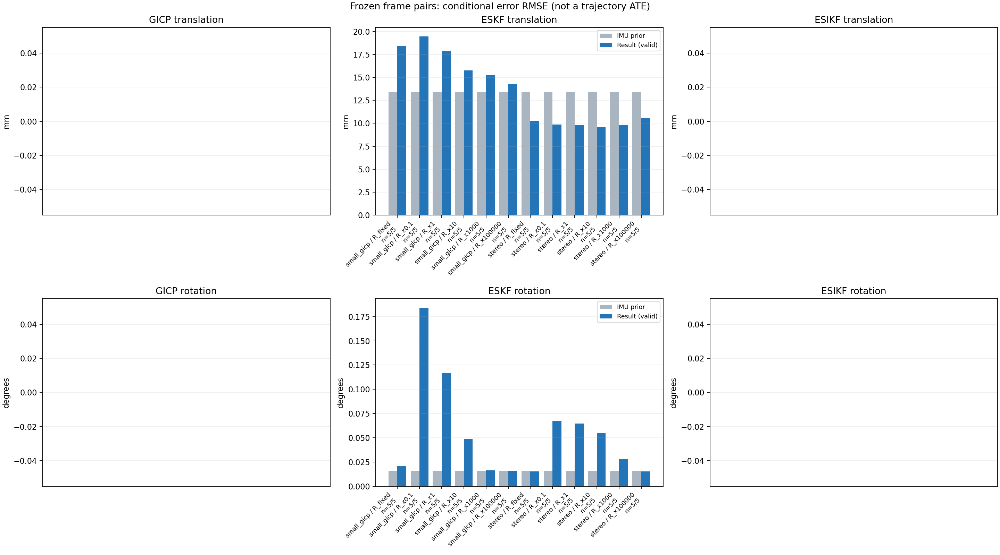

20261015_112757_right · depth=disparity_cache · cache=1d5fd51a7d51e544a691
模型视差：/home/ubuntu22/slam/SIO_SLAM/models/tensorrt/disp_896x448_fp16.plan；engine SHA256=604cf6ac1f705c877260711730dd5d2d58c2a21f3020c03c668401ef7fb1e768。输入为生产裁剪与光照处理后的 RGB 0..255；此实验使用原始浮点像素视差，不应用完整前端的邻域视差后处理。
原始 ONNX SHA256：e9f49736a65d68d06681add463866b6defdf78fdd7f4f50f6cc941b682fdc0bc。
代价体图改写验证：ONNX Runtime 固定随机特征输入，最大绝对误差 0；该项检查图改写，完整模型精度仍需由录制数据评估。
配准代码版本：744ac2d993ae629b0cc44a3b1d995e04ab4fad48；观测生成版本：744ac2d993ae629b0cc44a3b1d995e04ab4fad48。
固定图像对与纯 IMU 先验；ESKF 回放固定 GICP 观测，ESIKF 直接读取点云。真值只用于此报告。
同时查看 converged 与 solver_status：上游默认 Stereo 在 max_iter / stopped_at_minimum 时也可能置 converged=true。valid 表示输入检查通过，不表示精度提升。欧氏 GICP 未提供独立的点距 RMSE，该列显示 NaN。
误差按每对图像的锚点计算，单位 m / degrees。此处 RMSE 不是全序列 ATE；末帧受同一锚点条件约束。NIS 与条件马氏距离是诊断量，少量相关图像对不能用于宣称协方差已校准。
全部指标 CSV · R / P / K 矩阵 CSV · Stereo 求解逐轮 CSV · ESIKF 逐轮 CSV · 配置快照 · 矢量图
| stage | method | variant | valid | total | translation RMSE (m) | rotation RMSE (deg) |
|---|---|---|---|---|---|---|
| eskf | small_gicp | R_fixed | 5 | 5 | 0.018434 | 0.020689 |
| eskf | small_gicp | R_x0.1 | 5 | 5 | 0.019471 | 0.18432 |
| eskf | small_gicp | R_x1 | 5 | 5 | 0.017861 | 0.11647 |
| eskf | small_gicp | R_x10 | 5 | 5 | 0.015774 | 0.048633 |
| eskf | small_gicp | R_x1000 | 5 | 5 | 0.015266 | 0.016182 |
| eskf | small_gicp | R_x100000 | 5 | 5 | 0.014289 | 0.015581 |
| eskf | stereo | R_fixed | 5 | 5 | 0.010285 | 0.015408 |
| eskf | stereo | R_x0.1 | 5 | 5 | 0.0098575 | 0.067588 |
| eskf | stereo | R_x1 | 5 | 5 | 0.0097888 | 0.064809 |
| eskf | stereo | R_x10 | 5 | 5 | 0.0095487 | 0.054911 |
| eskf | stereo | R_x1000 | 5 | 5 | 0.0098014 | 0.027619 |
| eskf | stereo | R_x100000 | 5 | 5 | 0.010568 | 0.015261 |

| stage | case | method | variant | status | solver_status | inliers | converged | covariance_convention | covariance_from_hessian | fitness | registration_rmse_m | prior_trans_error_m | result_trans_error_m | prior_rot_error_deg | result_rot_error_deg | R_rot_trace_rad2 | R_pos_trace_m2 | nis_regularized |
|---|---|---|---|---|---|---|---|---|---|---|---|---|---|---|---|---|---|---|
| eskf | static_start | small_gicp | R_x0.1 | updated | 17102 | 1 | right_source_body | 1 | 0.949 | nan | 8.5313e-05 | 0.0053693 | 0.00090396 | 0.2553 | 1.5183e-07 | 2.0154e-06 | 279.63 | |
| eskf | static_start | small_gicp | R_x1 | updated | 17102 | 1 | right_source_body | 1 | 0.949 | nan | 8.5313e-05 | 0.0055792 | 0.00090396 | 0.18084 | 1.5183e-06 | 2.0154e-05 | 55.68 | |
| eskf | static_start | small_gicp | R_x10 | updated | 17102 | 1 | right_source_body | 1 | 0.949 | nan | 8.5313e-05 | 0.0032124 | 0.00090396 | 0.086017 | 1.5183e-05 | 0.00020154 | 9.6885 | |
| eskf | static_start | small_gicp | R_x1000 | updated | 17102 | 1 | right_source_body | 1 | 0.949 | nan | 8.5313e-05 | 0.00020019 | 0.00090396 | 0.0035051 | 0.0015183 | 0.020154 | 0.17535 | |
| eskf | static_start | small_gicp | R_x100000 | updated | 17102 | 1 | right_source_body | 1 | 0.949 | nan | 8.5313e-05 | 8.6386e-05 | 0.00090396 | 0.00091075 | 0.15183 | 2.0154 | 0.0017867 | |
| eskf | static_start | small_gicp | R_fixed | updated | 17102 | 1 | right_source_body | 1 | 0.949 | nan | 8.5313e-05 | 0.00018903 | 0.00090396 | 0.0028594 | 0.00022846 | 0.0012 | 1.0001 | |
| eskf | static_start | stereo | R_x0.1 | updated | max_iter | 15435 | 1 | left_target_body | 1 | 0.85579 | 0.084219 | 8.5313e-05 | 0.0011435 | 0.00090396 | 0.0047456 | 5.6222e-10 | 8.443e-09 | 1.1997 |
| eskf | static_start | stereo | R_x1 | updated | max_iter | 15435 | 1 | left_target_body | 1 | 0.85579 | 0.084219 | 8.5313e-05 | 0.0011253 | 0.00090396 | 0.0046264 | 5.6222e-09 | 8.443e-08 | 1.1755 |
| eskf | static_start | stereo | R_x10 | updated | max_iter | 15435 | 1 | left_target_body | 1 | 0.85579 | 0.084219 | 8.5313e-05 | 0.00097763 | 0.00090396 | 0.003868 | 5.6222e-08 | 8.443e-07 | 0.98211 |
| eskf | static_start | stereo | R_x1000 | updated | max_iter | 15435 | 1 | left_target_body | 1 | 0.85579 | 0.084219 | 8.5313e-05 | 0.00017452 | 0.00090396 | 0.0020165 | 5.6222e-06 | 8.443e-05 | 0.057635 |
| eskf | static_start | stereo | R_x100000 | updated | max_iter | 15435 | 1 | left_target_body | 1 | 0.85579 | 0.084219 | 8.5313e-05 | 8.7337e-05 | 0.00090396 | 0.00089335 | 0.00056222 | 0.008443 | 0.00063957 |
| eskf | static_start | stereo | R_fixed | updated | max_iter | 15435 | 1 | left_target_body | 1 | 0.85579 | 0.084219 | 8.5313e-05 | 9.6832e-05 | 0.00090396 | 0.00099281 | 0.00022846 | 0.0012 | 0.002985 |
| eskf | sync_motion | small_gicp | R_x0.1 | updated | 17049 | 1 | right_source_body | 1 | 0.91874 | nan | 0.00089766 | 0.025522 | 0.0098191 | 0.2146 | 1.6123e-07 | 2.2564e-06 | 1646.6 | |
| eskf | sync_motion | small_gicp | R_x1 | updated | 17049 | 1 | right_source_body | 1 | 0.91874 | nan | 0.00089766 | 0.021562 | 0.0098191 | 0.14378 | 1.6123e-06 | 2.2564e-05 | 232.08 | |
| eskf | sync_motion | small_gicp | R_x10 | updated | 17049 | 1 | right_source_body | 1 | 0.91874 | nan | 0.00089766 | 0.012577 | 0.0098191 | 0.037381 | 1.6123e-05 | 0.00022564 | 28.251 | |
| eskf | sync_motion | small_gicp | R_x1000 | updated | 17049 | 1 | right_source_body | 1 | 0.91874 | nan | 0.00089766 | 0.0044327 | 0.0098191 | 0.013377 | 0.0016123 | 0.022564 | 0.31768 | |
| eskf | sync_motion | small_gicp | R_x100000 | updated | 17049 | 1 | right_source_body | 1 | 0.91874 | nan | 0.00089766 | 0.00084341 | 0.0098191 | 0.0098725 | 0.16123 | 2.2564 | 0.0033684 | |
| eskf | sync_motion | small_gicp | R_fixed | updated | 17049 | 1 | right_source_body | 1 | 0.91874 | nan | 0.00089766 | 0.021843 | 0.0098191 | 0.031603 | 0.00022846 | 0.0012 | 1.0566 | |
| eskf | sync_motion | stereo | R_x0.1 | updated | max_iter | 15794 | 1 | left_target_body | 1 | 0.85898 | 0.11925 | 0.00089766 | 0.0028254 | 0.0098191 | 0.036171 | 5.5359e-10 | 8.3981e-09 | 73.17 |
| eskf | sync_motion | stereo | R_x1 | updated | max_iter | 15794 | 1 | left_target_body | 1 | 0.85898 | 0.11925 | 0.00089766 | 0.0025646 | 0.0098191 | 0.024775 | 5.5359e-09 | 8.3981e-08 | 45.958 |
| eskf | sync_motion | stereo | R_x10 | updated | max_iter | 15794 | 1 | left_target_body | 1 | 0.85898 | 0.11925 | 0.00089766 | 0.0024062 | 0.0098191 | 0.011108 | 5.5359e-08 | 8.3981e-07 | 10.629 |
| eskf | sync_motion | stereo | R_x1000 | updated | max_iter | 15794 | 1 | left_target_body | 1 | 0.85898 | 0.11925 | 0.00089766 | 0.002238 | 0.0098191 | 0.0077605 | 5.5359e-06 | 8.3981e-05 | 0.1446 |
| eskf | sync_motion | stereo | R_x100000 | updated | max_iter | 15794 | 1 | left_target_body | 1 | 0.85898 | 0.11925 | 0.00089766 | 0.001457 | 0.0098191 | 0.0088482 | 0.00055359 | 0.0083981 | 0.0026881 |
| eskf | sync_motion | stereo | R_fixed | updated | max_iter | 15794 | 1 | left_target_body | 1 | 0.85898 | 0.11925 | 0.00089766 | 0.0022509 | 0.0098191 | 0.0083261 | 0.00022846 | 0.0012 | 0.013775 |
| eskf | main_motion | small_gicp | R_x0.1 | updated | 20071 | 1 | right_source_body | 1 | 0.87277 | nan | 0.0040306 | 0.014225 | 0.019163 | 0.16753 | 1.1365e-07 | 2.1206e-06 | 332.08 | |
| eskf | main_motion | small_gicp | R_x1 | updated | 20071 | 1 | right_source_body | 1 | 0.87277 | nan | 0.0040306 | 0.013437 | 0.019163 | 0.10156 | 1.1365e-06 | 2.1206e-05 | 66.677 | |
| eskf | main_motion | small_gicp | R_x10 | updated | 20071 | 1 | right_source_body | 1 | 0.87277 | nan | 0.0040306 | 0.010634 | 0.019163 | 0.044944 | 1.1365e-05 | 0.00021206 | 8.3621 | |
| eskf | main_motion | small_gicp | R_x1000 | updated | 20071 | 1 | right_source_body | 1 | 0.87277 | nan | 0.0040306 | 0.0094801 | 0.019163 | 0.020173 | 0.0011365 | 0.021206 | 0.090517 | |
| eskf | main_motion | small_gicp | R_x100000 | updated | 20071 | 1 | right_source_body | 1 | 0.87277 | nan | 0.0040306 | 0.0054565 | 0.019163 | 0.019425 | 0.11365 | 2.1206 | 0.0010263 | |
| eskf | main_motion | small_gicp | R_fixed | updated | 20071 | 1 | right_source_body | 1 | 0.87277 | nan | 0.0040306 | 0.013623 | 0.019163 | 0.020535 | 0.00022846 | 0.0012 | 0.39521 | |
| eskf | main_motion | stereo | R_x0.1 | updated | max_iter | 18902 | 1 | left_target_body | 1 | 0.8238 | 0.20503 | 0.0040306 | 0.0042655 | 0.019163 | 0.017752 | 2.9005e-10 | 6.2381e-09 | 4.3001 |
| eskf | main_motion | stereo | R_x1 | updated | max_iter | 18902 | 1 | left_target_body | 1 | 0.8238 | 0.20503 | 0.0040306 | 0.0042649 | 0.019163 | 0.017271 | 2.9005e-09 | 6.2381e-08 | 4.0453 |
| eskf | main_motion | stereo | R_x10 | updated | max_iter | 18902 | 1 | left_target_body | 1 | 0.8238 | 0.20503 | 0.0040306 | 0.0042887 | 0.019163 | 0.015966 | 2.9005e-08 | 6.2381e-07 | 2.542 |
| eskf | main_motion | stereo | R_x1000 | updated | max_iter | 18902 | 1 | left_target_body | 1 | 0.8238 | 0.20503 | 0.0040306 | 0.004508 | 0.019163 | 0.019739 | 2.9005e-06 | 6.2381e-05 | 0.063967 |
| eskf | main_motion | stereo | R_x100000 | updated | max_iter | 18902 | 1 | left_target_body | 1 | 0.8238 | 0.20503 | 0.0040306 | 0.0046629 | 0.019163 | 0.019298 | 0.00029005 | 0.0062381 | 0.00070206 |
| eskf | main_motion | stereo | R_fixed | updated | max_iter | 18902 | 1 | left_target_body | 1 | 0.8238 | 0.20503 | 0.0040306 | 0.004567 | 0.019163 | 0.019283 | 0.00022846 | 0.0012 | 0.0063819 |
| eskf | main_motion_long | small_gicp | R_x0.1 | updated | 17502 | 1 | right_source_body | 1 | 0.79281 | nan | 0.02491 | 0.025482 | 0.02698 | 0.058761 | 1.3806e-07 | 2.4392e-06 | 169.44 | |
| eskf | main_motion_long | small_gicp | R_x1 | updated | 17502 | 1 | right_source_body | 1 | 0.79281 | nan | 0.02491 | 0.024807 | 0.02698 | 0.024085 | 1.3806e-06 | 2.4392e-05 | 62.427 | |
| eskf | main_motion_long | small_gicp | R_x10 | updated | 17502 | 1 | right_source_body | 1 | 0.79281 | nan | 0.02491 | 0.025626 | 0.02698 | 0.030931 | 1.3806e-05 | 0.00024392 | 17.658 | |
| eskf | main_motion_long | small_gicp | R_x1000 | updated | 17502 | 1 | right_source_body | 1 | 0.79281 | nan | 0.02491 | 0.027152 | 0.02698 | 0.026349 | 0.0013806 | 0.024392 | 0.28974 | |
| eskf | main_motion_long | small_gicp | R_x100000 | updated | 17502 | 1 | right_source_body | 1 | 0.79281 | nan | 0.02491 | 0.026009 | 0.02698 | 0.026855 | 0.13806 | 2.4392 | 0.003265 | |
| eskf | main_motion_long | small_gicp | R_fixed | updated | 17502 | 1 | right_source_body | 1 | 0.79281 | nan | 0.02491 | 0.027501 | 0.02698 | 0.026395 | 0.00022846 | 0.0012 | 0.79086 | |
| eskf | main_motion_long | stereo | R_x0.1 | updated | max_iter | 15347 | 1 | left_target_body | 1 | 0.6955 | 0.099197 | 0.02491 | 0.019921 | 0.02698 | 0.083243 | 6.0592e-10 | 9.8807e-09 | 71.648 |
| eskf | main_motion_long | stereo | R_x1 | updated | max_iter | 15347 | 1 | left_target_body | 1 | 0.6955 | 0.099197 | 0.02491 | 0.019794 | 0.02698 | 0.078332 | 6.0592e-09 | 9.8807e-08 | 66.889 |
| eskf | main_motion_long | stereo | R_x10 | updated | max_iter | 15347 | 1 | left_target_body | 1 | 0.6955 | 0.099197 | 0.02491 | 0.019254 | 0.02698 | 0.057358 | 6.0592e-08 | 9.8807e-07 | 42.59 |
| eskf | main_motion_long | stereo | R_x1000 | updated | max_iter | 15347 | 1 | left_target_body | 1 | 0.6955 | 0.099197 | 0.02491 | 0.018596 | 0.02698 | 0.034372 | 6.0592e-06 | 9.8807e-05 | 1.6541 |
| eskf | main_motion_long | stereo | R_x100000 | updated | max_iter | 15347 | 1 | left_target_body | 1 | 0.6955 | 0.099197 | 0.02491 | 0.018353 | 0.02698 | 0.026208 | 0.00060592 | 0.0098807 | 0.02044 |
| eskf | main_motion_long | stereo | R_fixed | updated | max_iter | 15347 | 1 | left_target_body | 1 | 0.6955 | 0.099197 | 0.02491 | 0.020935 | 0.02698 | 0.026812 | 0.00022846 | 0.0012 | 0.050544 |
| eskf | static_end | small_gicp | R_x0.1 | updated | 21818 | 1 | right_source_body | 1 | 0.98359 | nan | 0.0161 | 0.019071 | 0.0045092 | 0.16467 | 6.9113e-08 | 1.3139e-06 | 81.573 | |
| eskf | static_end | small_gicp | R_x1 | updated | 21818 | 1 | right_source_body | 1 | 0.98359 | nan | 0.0161 | 0.017409 | 0.0045092 | 0.059616 | 6.9113e-07 | 1.3139e-05 | 28.654 | |
| eskf | static_end | small_gicp | R_x10 | updated | 21818 | 1 | right_source_body | 1 | 0.98359 | nan | 0.0161 | 0.017486 | 0.0045092 | 0.0072827 | 6.9113e-06 | 0.00013139 | 4.2278 | |
| eskf | static_end | small_gicp | R_x1000 | updated | 21818 | 1 | right_source_body | 1 | 0.98359 | nan | 0.0161 | 0.017844 | 0.0045092 | 0.0040933 | 0.00069113 | 0.013139 | 0.050299 | |
| eskf | static_end | small_gicp | R_x100000 | updated | 21818 | 1 | right_source_body | 1 | 0.98359 | nan | 0.0161 | 0.017718 | 0.0045092 | 0.0041234 | 0.069113 | 1.3139 | 0.00056723 | |
| eskf | static_end | small_gicp | R_fixed | updated | 21818 | 1 | right_source_body | 1 | 0.98359 | nan | 0.0161 | 0.016731 | 0.0045092 | 0.0038495 | 0.00022846 | 0.0012 | 0.6721 | |
| eskf | static_end | stereo | R_x0.1 | updated | max_iter | 19865 | 1 | left_target_body | 1 | 0.89037 | 0.059223 | 0.0161 | 0.0078433 | 0.0045092 | 0.11944 | 4.4031e-10 | 7.2769e-09 | 22.35 |
| eskf | static_end | stereo | R_x1 | updated | max_iter | 19865 | 1 | left_target_body | 1 | 0.89037 | 0.059223 | 0.0161 | 0.0078281 | 0.0045092 | 0.11803 | 4.4031e-09 | 7.2769e-08 | 21.968 |
| eskf | static_end | stereo | R_x10 | updated | max_iter | 19865 | 1 | left_target_body | 1 | 0.89037 | 0.059223 | 0.0161 | 0.0077471 | 0.0045092 | 0.10674 | 4.4031e-08 | 7.2769e-07 | 18.789 |
| eskf | static_end | stereo | R_x1000 | updated | max_iter | 19865 | 1 | left_target_body | 1 | 0.89037 | 0.059223 | 0.0161 | 0.010448 | 0.0045092 | 0.046675 | 4.4031e-06 | 7.2769e-05 | 1.7469 |
| eskf | static_end | stereo | R_x100000 | updated | max_iter | 19865 | 1 | left_target_body | 1 | 0.89037 | 0.059223 | 0.0161 | 0.014061 | 0.0045092 | 0.0051055 | 0.00044031 | 0.0072769 | 0.029935 |
| eskf | static_end | stereo | R_fixed | updated | max_iter | 19865 | 1 | left_target_body | 1 | 0.89037 | 0.059223 | 0.0161 | 0.0080416 | 0.0045092 | 0.0051036 | 0.00022846 | 0.0012 | 0.11442 |